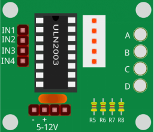
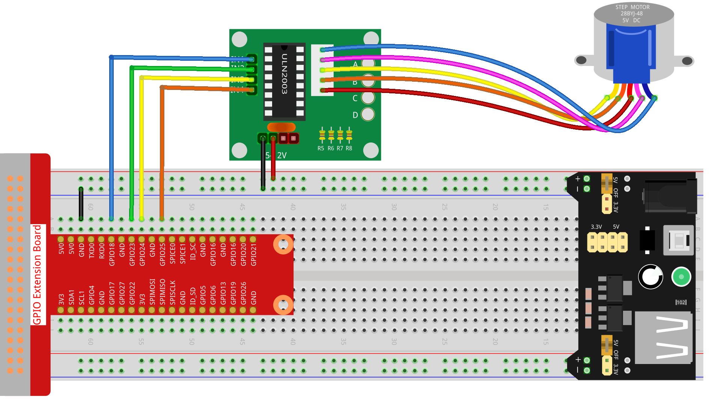

Note
Bonjour, bienvenue dans la communauté des passionnés de SunFounder Raspberry Pi, Arduino et ESP32 sur Facebook ! Plongez plus profondément dans le Raspberry Pi, Arduino et ESP32 avec d’autres passionnés.
Pourquoi nous rejoindre ?
Support d’experts : Résolvez les problèmes post-vente et relevez les défis techniques grâce à l’aide de notre communauté et de notre équipe.
Apprendre et partager : Échangez des astuces et des tutoriels pour perfectionner vos compétences.
Aperçus exclusifs : Bénéficiez d’un accès anticipé aux nouvelles annonces de produits et aux avant-premières.
Réductions spéciales : Profitez de réductions exclusives sur nos nouveaux produits.
Promotions festives et cadeaux : Participez à des concours et promotions spéciales pendant les fêtes.
👉 Prêt à explorer et à créer avec nous ? Cliquez sur [Ici] et rejoignez-nous dès aujourd’hui !
1.3.3 Moteur Pas à Pas
Introduction
Les moteurs pas à pas, grâce à leur conception unique, peuvent être contrôlés avec une grande précision sans nécessiter de mécanismes de rétroaction. L’arbre d’un moteur pas à pas, équipé d’une série d’aimants, est contrôlé par une série de bobines électromagnétiques chargées positivement et négativement dans un ordre spécifique, le déplaçant ainsi précisément vers l’avant ou vers l’arrière par petites « étapes ».
Composants

Principe
Moteur Pas à Pas
Il existe deux types de moteurs pas à pas, unipolaires et bipolaires, et il est très important de connaître le type de moteur avec lequel vous travaillez. Dans cette expérience, nous utiliserons un moteur pas à pas unipolaire.
Le moteur pas à pas utilisé ici est un moteur à quatre phases qui utilise une alimentation DC unipolaire. Tant que vous alimentez les enroulements de chaque phase du moteur selon une séquence temporelle appropriée, vous pouvez le faire tourner étape par étape. Le schéma d’un moteur pas à pas réactif à quatre phases est illustré ci-dessous :

Dans cette figure, au centre du moteur se trouve un rotor - un aimant permanent en forme d’engrenage. Autour du rotor, de 0 à 5, se trouvent les dents. Plus à l’extérieur, il y a 8 pôles magnétiques, chacun connecté par un enroulement de bobine avec son opposé. Ils forment ainsi quatre paires de A à D, appelées « phases ». Chaque phase possède quatre fils à connecter à des commutateurs SA, SB, SC et SD. Ainsi, les quatre phases sont connectées en parallèle dans le circuit, et les deux pôles magnétiques d’une même phase sont en série.
Fonctionnement d’un moteur pas à pas à 4 phases :
Lorsque l’interrupteur SB est alimenté, et que SA, SC et SD sont désactivés, les pôles magnétiques de la phase B s’alignent avec les dents 0 et 3 du rotor. En même temps, les dents 1 et 4 se désalignent avec les pôles des phases C et D. Les dents 2 et 5 se désalignent avec les pôles des phases D et A. Lorsque SC est alimenté, et que SA, SB et SD sont désactivés, le rotor tourne sous l’effet du champ magnétique de l’enroulement de phase C entre les dents 1 et 4. Les dents 1 et 4 s’alignent alors avec les pôles magnétiques de la phase C, tandis que les dents 0 et 3 se désalignent avec les pôles des phases A et B, et les dents 2 et 5 se désalignent avec les pôles magnétiques des phases A et D. Ce schéma se répète de manière continue. En alimentant successivement les phases A, B, C et D, le rotor tournera dans l’ordre A, B, C et D.

Le moteur pas à pas à quatre phases dispose de trois modes de fonctionnement : le mode « simple à quatre pas », le mode « double à quatre pas » et le mode « huit pas ». L’angle de pas pour les modes simple et double à quatre pas est le même, mais le couple de rotation pour le mode simple à quatre pas est plus faible. L’angle de pas du mode huit pas est la moitié de celui des modes simple et double à quatre pas. Ainsi, le mode de fonctionnement à huit pas permet de maintenir un couple élevé tout en améliorant la précision du contrôle.
Le stator du moteur pas à pas que nous utilisons a 32 pôles magnétiques, ce qui signifie qu’il faut 32 pas pour faire un tour complet. L’arbre de sortie du moteur pas à pas est relié à un réducteur, avec un rapport de réduction de 1/64. Ainsi, pour un tour complet de l’arbre de sortie, il faut 32*64=2048 pas.
ULN2003
Pour utiliser le moteur dans le circuit, une carte pilote est nécessaire. Le pilote de moteur pas à pas ULN2003 est un circuit inverseur à 7 canaux. Cela signifie que lorsque la broche d’entrée est à un niveau haut, la broche de sortie de l’ULN2003 est à un niveau bas, et vice versa. Si nous alimentons IN1 à un niveau haut et IN2, IN3 et IN4 à un niveau bas, alors la sortie OUT1 sera à un niveau bas, et toutes les autres sorties seront à un niveau haut. La structure interne de la puce est illustrée ci-dessous.

Le pilote de moteur pas à pas constitué par la puce ULN2003 et les 4 LED est présenté comme suit. Sur la carte, IN1, IN2, IN3 et IN4 fonctionnent comme entrées, et les quatre LED A, B, C, D indiquent les états des broches d’entrée. De plus, OUT1, OUT2, OUT3 et OUT4 sont connectés à SA, SB, SC et SD sur le pilote du moteur pas à pas. Lorsque la valeur de IN1 est réglée à un niveau haut, la LED A s’allume, l’interrupteur SA est activé, et le moteur pas à pas tourne d’un pas. Ce même schéma se répète pour les autres LED. Ainsi, en appliquant une séquence temporelle spécifique, le moteur pas à pas tournera étape par étape. L’ULN2003 est utilisé ici pour fournir des séquences temporelles particulières au moteur pas à pas.
Schéma de câblage

Procédures Expérimentales
Étape 1 : Montez le circuit.
{kind=link}
Étape 2 : Accédez au dossier du code.
cd ~/davinci-kit-for-raspberry-pi/c/1.3.3/
Étape 3 : Compilez le code.
gcc 1.3.3_StepperMotor.c -lwiringPi
Étape 4 : Exécutez le fichier compilé.
sudo ./a.out
Lorsque le programme s’exécute, le moteur pas à pas tourne dans le sens horaire ou antihoraire selon votre saisie : “a” pour antihoraire et “c” pour horaire.
Note
Si le programme ne fonctionne pas après l’exécution ou s’il y a un message d’erreur : "wiringPi.h: No such file or directory", veuillez vous référer à la section C code is not working?.
Code
#include <stdio.h>
#include <wiringPi.h>
const int motorPin[] = {1, 4, 5, 6};
int rolePerMinute = 15;
int stepsPerRevolution = 2048;
int stepSpeed = 0;
void rotary(char direction){
if(direction == 'c'){
for(int j=0;j<4;j++){
for(int i=0;i<4;i++)
{digitalWrite(motorPin[i],0x99>>j & (0x08>>i));}
delayMicroseconds(stepSpeed);
}
}
else if(direction =='a'){
for(int j=0;j<4;j++){
for(int i=0;i<4;i++)
{digitalWrite(motorPin[i],0x99<<j & (0x80>>i));}
delayMicroseconds(stepSpeed);
}
}
}
void loop()
{
char direction = '0';
while (1)
{
printf("select motor direction a=anticlockwise, c=clockwise: ");
delay(100);
direction=getchar();
if (direction == 'c')
{
printf("motor running clockwise\n");
delay(100);
break;
}
else if (direction == 'a')
{
printf("motor running anti-clockwise\n");
delay(100);
break;
}
else
{
printf("input error, please try again!\n");
delay(100);
}
}
while(1)
{
rotary(direction);
}
}
void main(void)
{
if (wiringPiSetup() == -1)
{
printf("setup wiringPi failed !");
return;
}
for (int i = 0; i < 4; i++)
{
pinMode(motorPin[i], OUTPUT);
}
stepSpeed = (60000000 / rolePerMinute) / stepsPerRevolution;
loop();
}
Explication du Code
int rolePerMinute = 15;
int stepsPerRevolution = 2048;
int stepSpeed = 0;
rolePerMinute : Révolutions par minute, la vitesse de rotation (RPM) du moteur pas à pas utilisée dans ce kit doit être comprise entre 0 et 17.
stepsPerRevolution : Le nombre de pas par tour, le moteur pas à pas utilisé dans ce kit nécessite 2048 pas par révolution.
stepSpeed : Le temps utilisé pour chaque pas, et dans main(), nous attribuons les valeurs de cette manière :「(60000000 / rolePerMinute) / stepsPerRevolution」 (60 000 000 us = 1 minute)
void loop()
{
char direction = '0';
while (1)
{
printf("select motor direction a=anticlockwise, c=clockwise: ");
direction=getchar();
if (direction == 'c')
{
printf("motor running clockwise\n");
break;
}
else if (direction == 'a')
{
printf("motor running anti-clockwise\n");
break;
}
else
{
printf("input error, please try again!\n");
}
}
while(1)
{
rotary(direction);
}
}
La fonction loop() est divisée en deux parties (situées entre deux while(1)) :
La première partie consiste à obtenir la valeur de la touche. Lorsque 'a' ou 'c' est reçu, le programme sort de la boucle et arrête la saisie.
La deuxième partie appelle rotary(direction) pour faire fonctionner le moteur pas à pas.
void rotary(char direction){
if(direction == 'c'){
for(int j=0;j<4;j++){
for(int i=0;i<4;i++)
{digitalWrite(motorPin[i],0x99>>j & (0x08>>i));}
delayMicroseconds(stepSpeed);
}
}
else if(direction =='a'){
for(int j=0;j<4;j++){
for(int i=0;i<4;i++)
{digitalWrite(motorPin[i],0x99<<j & (0x80>>i));}
delayMicroseconds(stepSpeed);
}
}
}
Pour faire tourner le moteur dans le sens horaire, le statut de niveau des broches motorPin est affiché dans le tableau ci-dessous :

Ainsi, l’écriture des potentiels des broches du moteur est implémentée en utilisant une double boucle for.
In Step1, j=0, i=0~4.
motorPin[0] will be written in the high level（10011001&00001000=1）
motorPin[1] will be written in the low level（10011001&00000100=0）
motorPin[2] will be written in the low level（10011001&00000010=0）
motorPin[3] will be written in the high level（10011001&00000001=1）
In Step2, j=1, i=0~4.
motorPin[0] will be written in the high level（01001100&00001000=1）
motorPin[1] will be written in the low level（01001100&00000100=1）
et ainsi de suite.
Et pour faire tourner le moteur pas à pas dans le sens antihoraire, le statut de niveau des broches motorPin est affiché dans le tableau suivant.

In Step1, j=0, i=0~4.
motorPin[0] will be written in the high level（10011001&10000000=1）
motorPin[1] will be written in the low level（10011001&01000000=0）
In Step2，j=1, i=0~4.
motorPin[0] will be written in the high level（00110010&10000000=0）
motorPin[1] will be written in the low level（00110010&01000000=0）
et ainsi de suite.